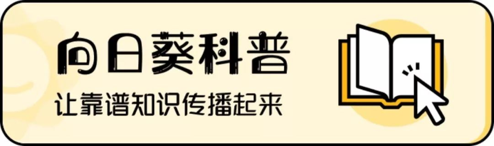
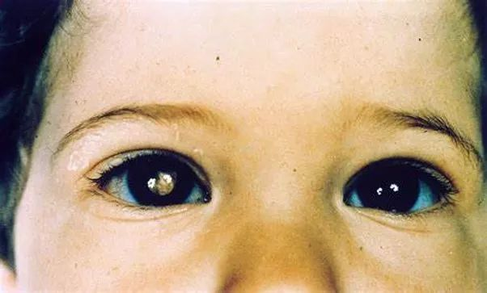
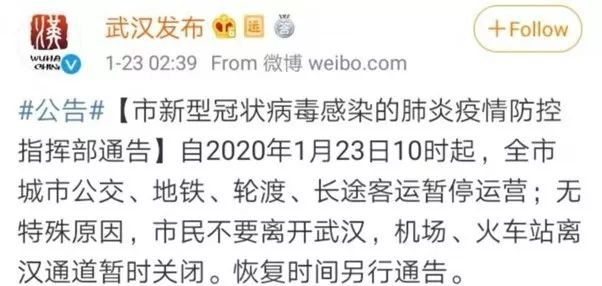
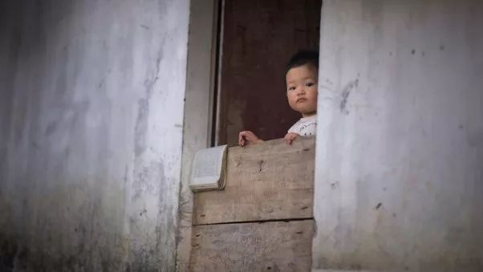
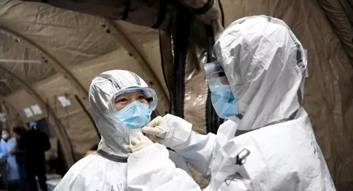

一位抗疫护士的三重身份：我不怕死，只是怕和孩子分开 | 口述实录
原文链接 备份链接 **记者/佟晓宇 ** 编辑/石爱华 宋建华 刘畅穿上防护服，进入隔离室 离开一岁多的孩子，刘畅上了“前线”，给儿子自然离乳的计划，没办法实现了。 刘畅是一名耳鼻喉科的护士，她所在的医院是武汉市第一批收治新冠肺炎患者的 …

***采访&撰稿 | 严青***
排版 | 博雅
在武汉封城的时候，有一群身患肿瘤的孩子，也因此留在了城里。他们需要面对的不仅是疫情，还有肿瘤治疗中的种种困境。
从1月23日起到现在，封城已接近一个月的时间。这些不得不留下的孩子们还好吗？
01
眼睛里有肿瘤的孩子
1岁10个月的彤彤有双一眨一眨的大眼睛，如果忽略左眼里有时出现的那一点白色反光，很难看出她是一个身患肿瘤的孩子。
彤彤患上的是视网膜母细胞瘤。这是儿童中最常见的眼部恶性肿瘤，全中国每年大概有1100个孩子不幸患上这种疾病。这种肿瘤会在眼睛里生长，孩子一开始并没有什么感觉，但后期会慢慢失明。如果不及时治疗，肿瘤最后会慢慢长到眼眶之外，进而扩散到身体其它部位。

患有视网膜母细胞瘤的孩子，在直视镜头拍照时，
瞳孔会出现白色反光（图中左边瞳孔）。
图片来源：网络
不过，只要及时发现和治疗，这种肿瘤的治愈率很高。通常，让家长忧心的不是如何治愈，而是孩子是否能保住眼睛——如果错过了保眼治疗的时机，孩子就只能选择摘除眼球来消灭肿瘤，用失去光明的代价来保住生命。
可是无论是彤彤还是妈妈都没想到，自从1月14日从医院回到武汉黄陂家中，彤彤就再也没能继续接受治疗。
在回黄陂过年之前，彤彤在上海接受治疗。她的肿瘤不是最为严重的分期，也就是说，通过合适的治疗，她可以保住漂亮的大眼睛，可以继续看见妈妈的笑脸，看见她喜欢的游乐园、动画片。
尽管在来到上海前，彤彤的治疗经历了些波折，但好在上海的治疗还算顺利。彤彤并不像其他孩子那么害怕医院，她喜欢医院里的护士阿姨们。一输完化疗药物，她就下地四处疯跑。要不是因为化疗后开始掉头发，和妈妈一块儿剃了光头，任谁也看不出她是个正在接受肿瘤治疗的孩子。
化疗的效果不错，从11月到1月，彤彤的肿瘤得到了控制。妈妈和医生商量好，等过完年，2月6日，会带彤彤来到上海，继续治疗。那时候，谁也没料到，一场席卷全国的疫情，正在悄然蔓延。
1月23日，武汉封城。

关于武汉封城的官方微博通知。
图片来源：微博截图
1月24日，大年三十。彤彤爸爸回当地农村老家烧香祭祖，正遇上村里封村，就滞留在了村里，至今没能回家。
封城的消息仿佛在彤彤妈妈的心头投下了一颗炸弹，把之前治疗顺利带来的喜悦炸得粉碎。稀薄的希望让她难以呼吸：出城无望，即便能出城，上海那边，也未必会收治来自疫区的孩子。彤彤的治疗该怎么办？
02
当肿瘤遇上疫情
武汉的冬天常有阴雨。街道一日比一日空旷，新型冠状病毒肺炎病人确诊的消息不断传来。潮湿的冷空气钻进裤管，寒气似乎快要渗到人的骨头里。
这样的天气里，彤彤妈妈不辞辛苦地往当地医院跑了一趟又一趟。因为彤彤在上海的主治医生告诉她，建议彤彤在黄陂当地找医院治疗，他可以把彤彤的化疗方案、用药剂量和清单发给当地医生，也可以远程和当地医生进行沟通。
为着这一线希望，尽管知道疫情期间去医院有风险，彤彤妈妈还是跑遍了附近的医院，希望能找到医生收治自己的女儿。
可遇上的总是失望。
“您家的孩子太小了。”一位肿瘤科医生客气地说。这家医院原本有3个肿瘤病区，有2个都已经被征用，成了新型冠状病毒肺炎病区，“我们医院收过的最小的孩子也有十岁多，完全没收过这么小的。不是说不想帮您，但是这么小的孩子我们实在没经验，要是万一出点什么事，我们也担待不起啊……”
怎么办？！脱疗的焦虑时刻啃噬着彤彤妈妈的心。她不停地刷着各种媒体消息，凡是能看到的，一条也不放过，似乎多了解一点新闻，疫情就能早一天结束，孩子也能早一天恢复治疗。但疫情的消息一天比一天令人揪心。
彤彤还小，完全不了解外界发生了什么，她只知道，爸爸一直没有回家，而妈妈再不让她出去玩了。楼下游乐园里，她最喜欢的滑梯空无一人，再没有小朋友和她抢了，可是她却不能出门。

图片来源：Unsplash
雪上加霜的是，彤彤的PICC管护理，也开始变得艰难。
PICC管是一种特殊材料做的导管，可以将药物从孩子四肢的血管，一直送到身体中央的大静脉。有了PICC管，孩子静脉注射药物的时候，就不用每次都忍受扎针的痛苦，直接通过PICC管注射就可以了，而且还能减少对外周静脉的刺激。所以，很多长期化疗的孩子，都会装上PICC管。
但PICC管也有不方便的地方，其中之一就是要每周维护一次。这种维护可不是在家处理一下就可以的，而是一定要由经过专业训练的护士进行。如果不能按时维护，就有感染的风险。而对于免疫力本来就差的肿瘤患儿来说，感染，可能意味着生命危险。
每周四是彤彤例行进行PICC管维护的时间。彤彤妈妈带着彤彤来到当地的PICC门诊，却看到大门紧闭，上面贴着一张停诊的通知。
这是怎么回事？彤彤妈妈怀疑自己眼花了，上次做维护的时候，明明说的是继续开诊呀！她把通知仔仔细细读了好几遍。没错，停诊，开诊时间待通知。
03
这是战场，我们都要好好的
“请帮帮忙，我的孩子急需医院收治！”
彤彤妈妈已经记不清自己是第几次发出这样的求助了。各路媒体、各种慈善和公益机构、各家医院……她一个接一个地打着电话，一趟又一趟地出门奔波，一遍又一遍地在网上发布信息，反反复复诉说着彤彤脱疗的困境。
彤彤妈妈并不是唯一一个这样做的人，许多脱疗的湖北患儿家长都陷入了同样的焦虑。大家私下里交换着消息：“听说这家医院能上疗呢！”“真的吗？”“听说某某医院湖北的一律不收了。”“有人说北京能上疗，不知道真的假的。”……
眼下的疫情无疑令人担心，但孩子的肿瘤等得到疫情结束吗？会不会最后等来的是转移或恶化？家长们不敢去想。只能凭着一种近乎本能的力量，四处询问、求助，贪求着每一点可能带来希望的信息。
但绝大多数信息，并没有太多实质性的用处。彤彤脱疗的日子，依然在一天天延长。
此外，彤彤的PICC管也一直没有维护。这很危险，一旦有害微生物在PICC管里繁殖，这根帮助孩子战胜肿瘤的导管，也许会变成孩子生命的威胁。

PICC管更换敷料的过程。
图片来源：网络
在咨询了彤彤主治医生的看法后，彤彤妈妈终于决定带彤彤去当地医院的住院部，请医生取出彤彤身体里的PICC管。
拔管时，看着医生和护士娴熟的操作，彤彤妈妈心里忍不住又燃起了一点小小的希翼。她不禁开口：“您这边能拔管的话，可不可以也帮孩子打一下化疗？我们真的没办法了，孩子耽误不起。”
“建议您尽量还是少带孩子来我们这儿。”医生平和地说。
“为什么呢？”
医生的口罩挡住了半张脸，彤彤妈妈看不清他的表情：“我们肿瘤病区确诊了2例新型冠状病毒感染，刚刚转走。特殊时期，您和孩子还是安全第一……”
这话仿佛一记惊雷炸响在彤彤妈妈耳边。新型冠状病毒！这段时间她一直惦记着彤彤的肿瘤，几乎忘了自己身在疫区，身边时刻潜伏感染的危险。不，她没有忘记，只是从来没有想到过，疫情的危险会离自己、离彤彤如此之近。
她想起看到过的新闻：携带者无症状也可能感染其他人，患者可能毫无预兆地转重。曾经在报道里看到过的面孔一张张从眼前滑过：那些因病毒而牺牲的医护人员、因过劳而倒下的警务工作者、因病情过重而遗憾离世的患者们……
这一刻，彤彤妈妈终于看清了疫情险峻的真面目：这是一场没有硝烟的战争。原来我们每一个人都早已身在战场，而武汉，正是前线。

武汉方舱医院里，抗击疫情的一线医护人员。
图片来源：中新网
“从那一天起，我就不再想着到处跑、到处找办法求助，找地方收治彤彤了。”彤彤妈妈的声音有种经历挣扎后的平静。
她开始更多地关注疫情。那些因为家人患病而被感染的孩子，还有因为母婴传播而一出生就患上新型冠状病毒肺炎的新生儿，都牵动着她的心。“太不幸了，想起来就觉得很痛心。”彤彤妈妈说。
“我想过了，现在是有很多困难。不过如果我们暂时不治疗，最坏的结果就是彤彤有可能会转移什么的，但是这样都是可以治疗的，只要疫情控制住了，治疗都不是问题。但要是疫情更加严重，甚至我们不幸感染了，那就真的什么希望都没有了。”
“好好做好我们能做的，保护好自己，”彤彤妈妈认真地对我说，“疫情最后肯定会过去的，我们都要好好的。”

图片来源：Unsplash
就在发稿前，我们从央视新闻得到了最新消息：为做好疫情期间非新冠肺炎患者医疗救治工作，特别是满足慢性重症患者、孕产妇、儿童、血液透析患者的医疗需求，武汉部分医院将接收非新冠肺炎患者。其中，武汉儿童医院可接收儿童患者。这对于留在武汉的肿瘤患儿来说无疑是个好消息。
加油孩子们，你们会好好的！

央视新闻官博截图

点一次“在看”，就是说一声“加油孩子们！”
原文链接 备份链接 **记者/佟晓宇 ** 编辑/石爱华 宋建华 刘畅穿上防护服，进入隔离室 离开一岁多的孩子，刘畅上了“前线”，给儿子自然离乳的计划，没办法实现了。 刘畅是一名耳鼻喉科的护士，她所在的医院是武汉市第一批收治新冠肺炎患者的 …
原文链接 备份链接 2月4日下午，《新民周刊》连线了正在一线的第一批上海援鄂医疗队领队、临时党总支书记、上海市第一人民医院副院长郑军华，了解第一批上海援鄂医疗队在武汉金银潭医院的具体情况，也澄清了现在社会上的对于医疗队安全保障的关切。 郑 …
原文链接 备份链接 凤凰新闻客户端 凤凰网在人间工作室出品 对于刚刚年满十八岁的少年小雨来说，2020年1月25日，大年初一晚上，是他生命中迄今最漫长的一夜。 武汉下着雨。第一人民医院发热门诊急救室外的走廊上，小雨和母亲相偎在没有温度的椅 …
原文链接 备份链接 经历这样的危机事件，对孩子幼小的心灵会有很大冲击，同时也可以成为孩子心理成长的契机。 面对新型冠状病毒肺炎，即便是医务人员的我，也感到心烦意乱。一边不停地刷疫情进展、实时报道，心情随着数字起伏不定，一边操心买口罩、买 …
原文链接 备份链接 昨天除夕夜，我们收到了一份沉甸甸的读者来信。信件是由一名父亲写给他远在重庆老家的孩子。这个春节，他们夫妻二人作为浙江前线医护人员，为了对患者负责，放弃了与家人团聚的时间。他们没时间感叹，也来不及思恋，昼夜奋战在疫情一 …